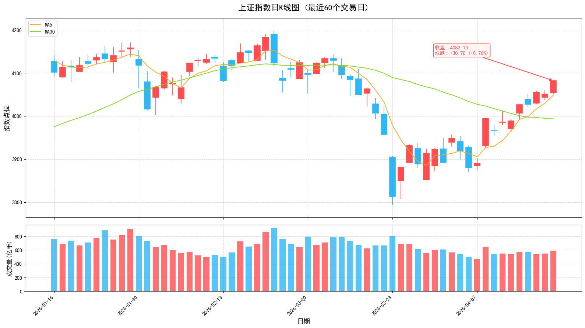

2026年4月20日 | 周日
美伊谈判陷入僵局，伊朗拒绝第二轮会谈；证监会新规扩大战略投资者类型；发改委下达2168亿元支持重大项目；沪指在4050点附近震荡整固，等待方向选择。
周五（4月17日）上证指数微跌0.10%收于4051点，深证成指涨0.60%，创业板指大涨1.43%报3678.29点，创2015年6月以来近11年新高。两市成交额达2.45万亿元，市场情绪高涨。今日（4月20日）为周日，市场休市。
伊朗方面称，由于美方提出过分要求，谈判取得成果的前景并不明朗。伊朗已拒绝参加与美国的第二轮谈判。美军中央司令部宣布自4月13日起封锁伊朗港口海上交通。伊朗伊斯兰革命卫队表示，霍尔木兹海峡目前处于管控之下，在遵守特定规定的前提下对非军事船只开放。
证监会发布新规，扩大战略投资者类型，明确全国社保基金、基本养老保险基金等机构投资者可以作为战略投资者；明确战略投资者本次认购比例原则上不低于本次发行完成后上市公司总股本的5%。此举将为A股引入更多长线资金。
国家发展改革委会同有关部门组织下达2026年第二批"两重"建设项目清单，共安排超长期特别国债资金2168亿元支持336个重大项目。相关项目涉及人工智能、城市地下管网建设改造、长江经济带交通基础设施、高标准农田、高等教育提质升级、"三北"工程等重点领域。
市场监管总局对7家电商平台"幽灵外卖"系列案作出行政处罚决定，责令改正违法行为，暂停新增蛋糕店铺3至9个月不等，并处以罚没款共计35.97亿元。责任不能"转单"，安全不容"造假"。
花旗报告显示，截至4月15日当周，中国ETF记录到108亿美元的赎回，带动整个新兴市场基金流出105亿美元。相比之下，美国基金获得174亿美元流入，拉丁美洲基金获得21亿美元流入。资金在新兴市场中从东亚转向拉美。
北向资金成交额持续维持高位，外资对中国资产关注度提升。前十大重仓股：宁德时代、贵州茅台、美的集团、招商银行、中际旭创、北方华创、紫金矿业等。

指数在4050点附近震荡，可继续持有。关注MA5支撑，跌破则降低仓位。创业板指强势，可适当配置成长股。
关注AI算力、新能源、消费电子等热点板块。避免追高，等待回调至MA5附近介入。聚焦一季报业绩超预期品种。
本报告仅供参考，不构成投资建议。市场有风险，投资需谨慎。关注美伊谈判后续进展、美联储利率决议、一季报业绩披露等对市场的影响。
A股日报 | 数据来源：东方财富、同花顺、证监会官网
2026年4月20日